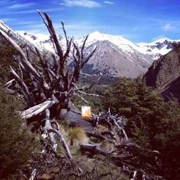

3rd November 2013
http://facebook.com/NZRogaining
| New Zealand Rogaining Association (Inc.) 3rd November 2013 |
http://facebook.com/NZRogaining |
- Events coming up soon
- WRC2014, Black Hills, South Dakota – registration is now open
- Recent results including the Hogs Back
- Special tips on gaining entry for WRC2016
1. the NZRA website event calendar at http://www.rogaine.org.nz/ andfor details of future rogaines.
2. the Maptalk website, http://www.maptalk.co.nz/events/default.cfm?t=Rogaine

well supported with more than one hundred and sixty people taking part in the three and six hour courses on offer.“A big thank-you to all the competitors for taking part and to Bivouac Outdoor for their fantastic support for this event. Stay tuned for updates as we are looking to run another event this summer”.